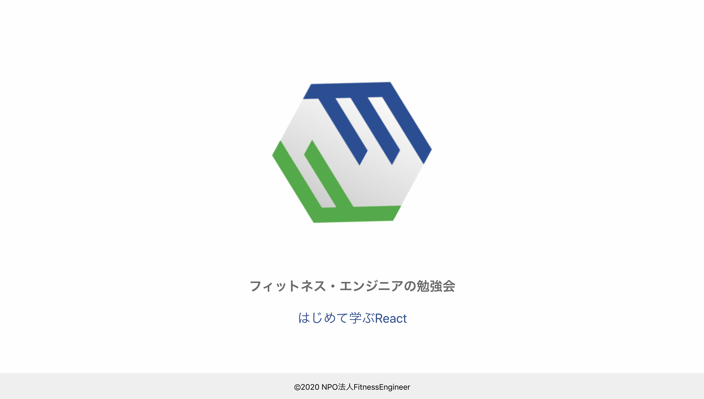
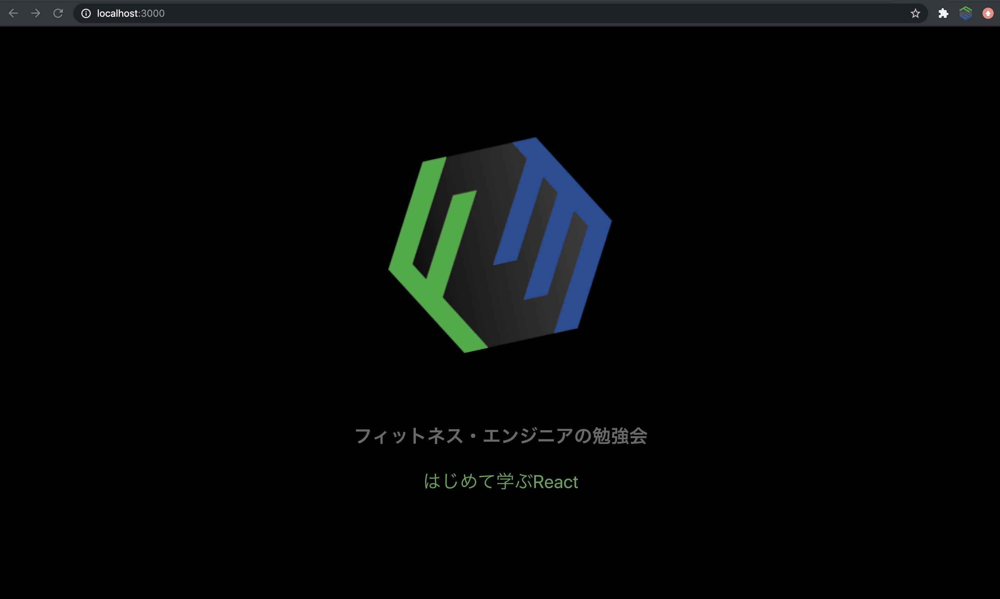

それでは次に進んで早速取り組んでいきましょう。
目指す状態
※ 背景色の指定に加えて以下のようにスタイリングすると見栄えが良くなりますのでお試しください。
position: absolute;
bottom: 0;
width: 100%;
padding: 16px 0px;
ヒント
ヒント
例
ヒント
ヒント
この課題は当日参加者のみ取り組んでいただく課題のため、その他の方はスキップしてください。
◆ ◇ ◆ ◇ ◆ ◇ ◆ ◇ ◆ ◇ ◆ ◇ ◆ ◇ ◆ ◇ ◆ ◇
#37 【フロントエンド開発入門】Reactハンズオン勉強会（SPA開発編）｜JavaScript初心者可
◆ ◇ ◆ ◇ ◆ ◇ ◆ ◇ ◆ ◇ ◆ ◇ ◆ ◇ ◆ ◇ ◆ ◇
#40 【フロントエンド開発入門】Reactハンズオン勉強会（PWA開発編）｜JavaScript初心者可
◆ ◇ ◆ ◇ ◆ ◇ ◆ ◇ ◆ ◇ ◆ ◇ ◆ ◇ ◆ ◇ ◆ ◇
お知らせ｜情報発信のためにTwitterアカウント作成しました！
connpassでは募集をしないイベントなども徐々に増えていくと思いますので、アカウントをお持ちの方はフォローの上、イベント開催情報の投稿に気付いた時はいいね・リツイートをお願いいたします！ボランティアで運営している状態のため、本格的な運用開始時期は未定です。
Reactに限らず、ことスキル習得に関しては、月１の勉強会ではちゃんと活用できようになるまで時間がかかってしまう点が少しネックです。
結論から言うと、短い時間で理解を深めて使いこなすには月１や週１を超えた継続的な学習が大切です。
私たちは健康にせよ情報技術にせよ、獲得し維持・成長を続けるためには、習慣を身に付けることが重要であると考え、サポーターの方向けに習慣を身につける場も提供していく方針です。
私たちの活動を応援するサポーターの方との連絡手段としてSlackを活用するため、サポーター登録をしていただいた方はそのSlack上で情報技術の学習や健康に良い軽い運動をコンスタントに続けられるような後押しが得られるイメージになります。
私たちのチャットツールの使い分け・参加方法については後ほどスライドでも補足させていただきます。
※ 時間が押している場合は次回以降に預けますのでご了承ください。